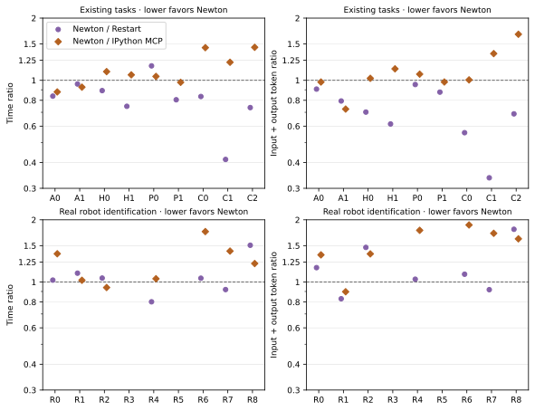
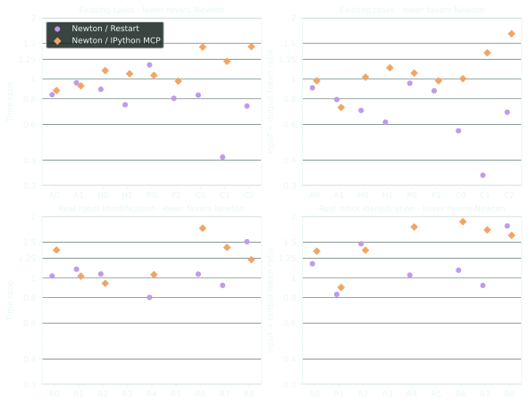
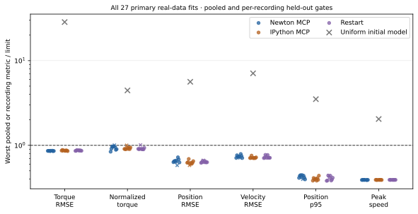
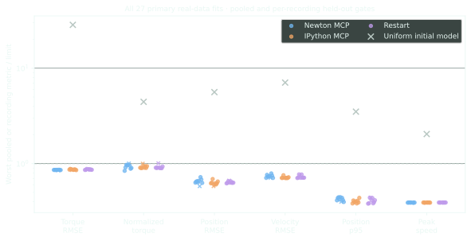
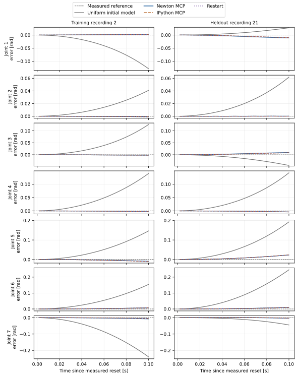
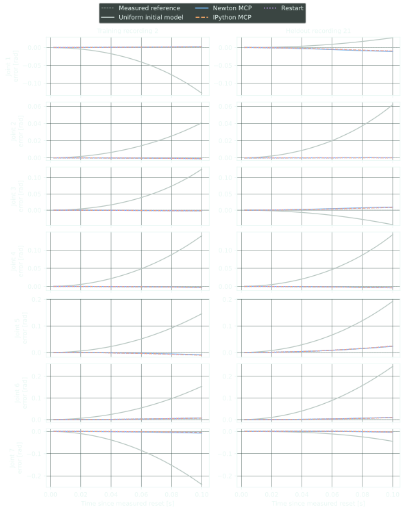

Experimental systems study
Live inspection and tuning of Newton simulations
Abstract
Simulation tuning requires inspection, parameter changes, and repeated numerical evaluation. This study compares Newton’s persistent Python MCP, an existing IPython MCP server, and editing scripts followed by process restarts in 54 registered GPT-6 Astra trials, with seven separate corrected-IPython trials. Tasks include asset tracking, synthetic calibration, and identification of 98 effective Panda dynamics coefficients from physical robot measurements, starting from uniform placeholder dynamics. Each primary method passes all nine existing cases and eight of nine real-data repeats against frozen training and held-out gates. On matched successful existing cases, Newton uses 20.3% less time and 31.4% fewer input-plus-output tokens than restarting. On real identification it uses 4.5% more time than restarting and 22.5% more than IPython. Three narrow held-out torque failures are retained. Persistent execution works and reduces restart costs in some tasks, but the results do not establish general superiority over IPython or on measured robot identification.
The original published two-way study is preserved unchanged, including all 18 earlier trials, media, and source evidence. Those results are a separate historical experiment.
1. Registered comparison
The three conditions receive the same application code, references, solver, fitting libraries, task criteria, and working-directory conventions. Persistent conditions share the same SimulationSession and scenario helpers. IPython bypasses Newton’s MCP transport and Python executor; this comparison therefore measures execution-interface effects with simulation integration already supplied, rather than the cost of adding Newton-specific support to generic IPython.
| Condition | Agent access | Candidate lifetime |
|---|---|---|
| Newton MCP | Persistent Python, structured simulation operations, and image observations through Newton tools. | In-place edits and reset in one instrumented application. |
| IPython MCP | Unmodified pinned upstream server, connected to an ordinary IPython kernel with the same session helpers. | Persistent kernel and native Python execution. |
| Edit/restart | Python files, helper programs, and command-line evaluations. | A fresh Newton model and solver for each physical candidate. |
The frozen registration specifies 61 independent GPT-6 Astra contexts at xhigh reasoning: 54 primary runs and seven exploratory corrected-IPython runs. The primary set crosses three conditions with nine existing cases and nine real-data replicates. Existing cases comprise two variants each of Panda posture tracking, Allegro posture tracking, and recorded HUG hand-motion replay, plus three synthetic Panda calibration instances. Real-data replicates use identical initial parameters and recordings; they measure agent variation on one robot dataset.
Existing cases allow 600 seconds and 12 completed candidates; real identification allows 1,200 seconds and 60. Offline fitting is permitted equally and does not count as a physical rollout. Contexts run serially in fresh workspaces, in a frozen seeded order. Source was committed, and prompts, data, thresholds, and order were recorded and hashed before the first scored context; development attempts are separate.
Four preliminary development contexts are excluded and preserved separately: one Panda IPython integration run and three real-data attempts. The real-data attempts overlapped while shared source and asset handling changed, so their timings cannot support a controlled comparison. Their original outcomes remain unchanged. A separate fresh check of the three final development configurations after source freeze passed training and held-out gates; it does not retroactively make those contexts eligible.
Startup-inclusive time includes application or kernel construction and agent execution, including bridge startup and kernel connection. Common immutable preprocessing is measured separately and excluded equally. Verification runs after agent exit and child-process cleanup. Newton Python source, task, input, geometry, and manifest hashes are checked before and after verification. Physics measurements remain distinct from eligible study success. All failures and timeouts are retained; elapsed time and input-plus-output tokens are reported for every run, with paired efficiency comparisons restricted to matched successful cases. Cached input is a subset of total input; uncached input plus output is reported separately.
2. A live Newton Python workspace
The experimental public module newton.mcp adds no required dependency. A standard stdio MCP bridge forwards requests over authenticated loopback TCP to the application. Transport threads enqueue work; the thread owning simulation and rendering executes it through pump() or run(), including while paused. This internal connection is not a Streamable HTTP endpoint. The external boundary follows the MCP transport specification.
The compact profile exposes describe, execute, observe, and rebuild, with the newton_ prefix. Python can call the full structured interface through session.dispatch(). Queries use attribute-frequency metadata and world/body/shape/joint filters. Validated numeric edits update arrays in place and notify native solver caches; coupled inspection uses public child bindings. Reset restores initial state, control, time, and caches while retaining tuned model properties. Rebuild replaces the model/solver pair. Checkpoints contain public physical state, not arbitrary application history or every hidden solver variable.
Execution uses a persistent registered Python module. Imports, variables, functions, classes, and supported Warp kernels survive calls and physical resets. Live model, state, control, and solver bindings refresh around managed state changes. Ordinary aliases and captured default arguments retain normal Python reference semantics. Rebuild clears the workspace. This supports ordinary Python, including dataclasses and recent-cell source inspection, but not IPython magics, top-level await, or rich notebook display.
The previous executor discarded Python definitions between calls and could not recover cell source for Warp compilation. The preserved before/after interactions and failing/passing regressions establish that cross-cell imports, functions, dataclasses, and Warp kernels now work. This is correctness and usability evidence; the current agent comparison evaluates the revised executor and does not isolate the timing effect of namespace persistence.
# First call: preserve an import and function.
import numpy as np
def joint_positions():
return np.asarray(state.joint_q.numpy()).copy()
# Second call: the function resolves the current state binding.
session.dispatch("step", {"count": 1})
joint_positions()[:7]A final expression is displayed; explicit result = takes precedence for that call, and _ retains the last non-None value. Large arrays and opaque objects receive bounded summaries without calling arbitrary representation methods. Output is limited to 16,384 captured characters and 65,536 JSON characters; source retention is bounded. A result-encoding failure after successful execution preserves validity and warns against repeating the mutation.
Compilation errors leave the scene unchanged. Runtime exceptions preserve workspace variables but pause and invalidate the session: there is no automatic rollback or guess that an error was harmless. Explicit recovery="inspect" allows diagnosis; recovery="acknowledge" asserts that the caller has verified or restored coherence and leaves playback paused. Rebuild provides a fresh scene. Successful arbitrary Python likewise does not prove model/solver coherence. Trusted execution retains process privileges and cannot safely preempt running Python.
3. Existing IPython and a disclosed correction
The primary IPython condition uses ipython-mcp revision c2fa8d6, without server edits. Its kernel supplies IPython semantics, while the pinned MCP server forwards text; image inspection requires file access. It does not invoke Newton’s executor or its exception-recovery guard.
A separate SDK characterization reproduced a protocol defect. The server stops waiting for a shell reply after 30 seconds without correlating subsequent replies to their execution request. A late exception from the first cell was returned as the second cell’s result even though the second cell executed successfully. The error also arrived with isError: false; accounting recognizes its textual failure marker.
The disclosed corrected control matches parent message IDs, discards stale replies, and permits a 300-second wait. A deliberately short-deadline regression verifies correct subsequent reply delivery. These are two changes, so their individual effects are not isolated. Seven separately labeled sensitivity contexts cover one case per existing task and three real-data replicates; they do not replace upstream failures in the primary comparison.
4. Identification from measured Panda data
The physical measurements come from the LIP4RobotInverseDynamics dataset, distinct from the earlier Newton-generated calibration references. The publisher’s paper, section V-B, describes ROS position, velocity, and torque measurements filtered at 4 Hz, with acceleration obtained by acausal differentiation. The experiment uses published q, dq, ddq, tau_interp, and original timestamps without further filtering. Torque is filtered, interpolated measured generalized joint torque; the release does not establish reconstructed raw motor commands.
Training uses the three lowest published training seeds, 2, 3, and 4, totaling 8,771 joint-observation vectors. Verification uses all 16 published test recordings. The archive contains 13 training seeds despite the paper describing ten; this discrepancy is retained in the data provenance. Selection follows seed order, not fit quality. Actual irregular timestamps, approximately 17 ms apart, govern interpolation.
The Menagerie Panda geometry is sanitized to retain meshes, kinematics, topology, and joint ranges while removing authored inertias, actuator settings, losses, and initial configurations. Mesh density is zero and contacts are disabled. Each moving link starts at 1 kg, zero body-frame center of mass (COM), and diagonal COM inertia 0.01 kg·m². Joint losses, bias, and armature start at zero. These homogeneous placeholders contain no fitted or manufacturer dynamics.
The 98 model coefficients comprise seven sets of mass, three COM coordinates, and six symmetric inertia entries, plus seven each of viscous friction, Coulomb friction, torque bias, and reflected joint inertia. Mass is bounded to 0.05–10 kg and each COM coordinate to ±0.4 m; positive-inertia, triangle, and broad spatial-size constraints enforce physical link properties. Losses, bias, and armature also have fixed bounds. Full JSON tensors store mirrored entries redundantly. The training regressor has numerical rank 69 at relative cutoff 0.00001, leaving parameter combinations unresolved. The task therefore evaluates predictive effective dynamics on the recorded motions, without claiming unique recovery of individual link properties.
Every condition receives the same immutable inverse-dynamics regressor built through public Newton APIs from geometry and measured positions, velocities, and accelerations. Its 70 link columns use mass, first moments, and inertia about each link-frame origin; the parallel-axis theorem maps submitted COM tensors into that basis. Twenty-eight joint-parameter columns complete the matrix. Selecting 150 fixed time samples per training recording, with seven joint equations per sample, gives a 3,150 × 98 matrix. Newton basis calculations use float32, stored as float64. Manufacturer dynamics arrays, publisher estimators, fitted answers, and test responses are excluded. Agents write their own fitting programs with the same NumPy, SciPy, and CVXPY access.
Forward evaluation resets measured position and velocity at 12 fixed windows per recording, then applies measured torque for 50 steps of 2 ms. Torque is interpolated at step midpoints and reference states at step ends. Fitted bias is subtracted; friction and armature use native solver properties. There is no tracking controller. Training comprises 36 windows and 1,800 steps; test verification comprises 192 windows and 9,600 steps.
| Quantity | Upper limit |
|---|---|
| Maximum joint torque RMSE | 0.5 N·m |
| Maximum normalized joint torque RMSE | 0.5 |
| Maximum joint forward-position RMSE | 0.025 rad |
| Maximum joint forward-velocity RMSE | 0.5 rad/s |
| 95th percentile absolute forward-position error | 0.05 rad |
| Maximum simulated joint speed | 5 rad/s |
Forward root-mean-square errors (RMSEs) include every window step; torque errors use the fixed sampled rows. Torque normalization uses each joint’s sampled standard deviation within its recording, floored at 0.5 N·m. Physical validity and all expected finite samples are required; a later reset cannot erase a failed sample. The split, sampling, and gates were frozen before test responses were deserialized or scored. Study success requires a passing logged training candidate and fresh training plus complete test verification of the identical submitted JSON after agent exit.
5. Interface and observation validation
Observations default to SensorTiledCamera, including when a viewer is attached, giving a consistent modality without an OpenGL context. Agents specify camera pose, resolution, world, and channels such as color, albedo, depth, normals, or shape IDs. Responses include an image and camera metadata; numeric artifacts and pixel picking support further inspection. Explicit backend="viewer" captures an attached ViewerGL on its owner thread, including wireframe mode. Unsupported settings fail explicitly. Recording writes bounded PNG sequences with simulation timestamps and a manifest.
Linux integration ran 97 tests with one expected attached-viewer skip. Actual official MCP SDK tests exercised Newton’s persistent cells, and actual upstream IPython MCP/kernel tests exercised persistent variables and rollout parity. Scientific regressions cover full COM and off-diagonal inertia mapping, native edits versus fresh models, reset, incomplete histories, and nonfinite failure parity.
On the frozen source, Windows Server 2025 validation ran 64 tests: 62 passed and two skipped, for unavailable CUDA and disabled attached ViewerGL capture. All 19 persistent-executor tests passed, including SDK calls, cross-cell Warp kernels, and dataclasses. The environment and artifact checksums accompany the exact CPU test log. This validates interface behavior, not Windows agent performance.
The camera selector below preserves actual historical sensor and viewer captures. Explicit camera pose, channel, dimensions, and scene revision make observations interpretable. Contact overlays depict collision geometry, not measured solver forces. These captures establish interface capabilities independently of the current timed study.

Historical Panda, Allegro, and HUG simulation recordings
These earlier post-trial captures contain 31 sensor frames spanning 0–3 s. They are simulated trajectories from the original study, not results of the current three-way comparison.
6. Current comparison results
All 61 registered contexts completed: 58 passed and three missed a physical-quality gate. Every context passed the integrity and workflow audit. In the 54 primary runs, each method passed all nine existing cases and eight of nine real-data replicates. There were no observed context timeouts, reply-correlation failures, or physics-execution failures. The separate corrected-IPython sensitivity passed seven of seven cases.
On existing cases, Newton’s geometric mean paired time ratio against restart is 0.797: 20.3% less time, with a descriptive 95% bootstrap interval of 0.659–0.928. Input-plus-output tokens fall 31.4%, while uncached input plus output falls 18.3%. The three synthetic calibration cases show the largest task-specific reduction against restart: 36.6% in paired time and 49.4% in input-plus-output tokens. Against upstream IPython, however, Newton uses 10.6% more time and 7.8% more input-plus-output tokens across existing cases; the corresponding intervals include equality.
The real-data task does not reproduce Newton’s paired advantage. Across seven jointly successful replicates, Newton uses 4.5% more time and 15.0% more input-plus-output tokens than restart, and 22.5% more time and 48.0% more tokens than upstream IPython. The time intervals are 0.923–1.209 and 1.057–1.433, respectively. Uncached input plus output is also higher by 27.1% and 21.9%. These are small-sample comparisons on one recorded identification problem.
Table 3 retains all costs, including failures. Table 4 gives geometric means of within-case cost ratios for jointly eligible successes; each pair receives equal weight. Thus Newton’s lower total real-data time than restart can coexist with a paired ratio above one: failures differ between methods, and totals weight longer runs more heavily. Cached input changes token accounting substantially, so total input-plus-output is not a direct estimate of billed cost. Intervals resample whole pairs 20,000 times with seed 20260920. Exact sign and permutation tests, exclusions, and unrounded values are retained in the comparison JSON; these unadjusted descriptive intervals do not establish a population-wide ranking.
| Task set | Method | Physics pass | Eligible pass | Total time [s] ↓ | Input + output tokens ↓ | Candidates |
|---|---|---|---|---|---|---|
| Existing tasks | Newton MCP | 9/9 | 9/9 | 707.17 | 1,641,505 | 33 |
| Existing tasks | Restart | 9/9 | 9/9 | 963.85 | 2,631,231 | 38 |
| Existing tasks | IPython MCP | 9/9 | 9/9 | 605.26 | 1,481,278 | 34 |
| Real identification | Newton MCP | 8/9 | 8/9 | 3,706.81 | 8,326,155 | 286 |
| Real identification | Restart | 8/9 | 8/9 | 3,872.85 | 8,032,439 | 125 |
| Real identification | IPython MCP | 8/9 | 8/9 | 3,030.96 | 5,864,263 | 204 |
| Corrected-IPython sensitivity | Corrected IPython | 7/7 | 7/7 | 1,026.08 | 2,056,729 | 57 |
| Task set | Numerator / denominator | Time ratio | Input + output ratio | Uncached input + output ratio |
|---|---|---|---|---|
| Existing tasks | Newton MCP / Restart | 0.797 [0.659, 0.928]; n=9 | 0.686 [0.552, 0.818]; n=9 | 0.817 [0.673, 0.982]; n=9 |
| Existing tasks | Newton MCP / IPython MCP | 1.106 [0.995, 1.237]; n=9 | 1.078 [0.938, 1.246]; n=9 | 0.830 [0.668, 1.021]; n=9 |
| Existing tasks | Restart / IPython MCP | 1.388 [1.113, 1.779]; n=9 | 1.571 [1.197, 2.134]; n=9 | 1.016 [0.780, 1.295]; n=9 |
| Real identification | Newton MCP / Restart | 1.045 [0.923, 1.209]; n=7 | 1.150 [0.968, 1.400]; n=7 | 1.271 [1.053, 1.631]; n=7 |
| Real identification | Newton MCP / IPython MCP | 1.225 [1.057, 1.433]; n=7 | 1.480 [1.224, 1.723]; n=7 | 1.219 [1.030, 1.459]; n=7 |
| Real identification | Restart / IPython MCP | 1.194 [0.998, 1.414]; n=8 | 1.275 [1.058, 1.545]; n=8 | 0.944 [0.814, 1.099]; n=8 |
| Subset | Numerator / denominator | Time ratio | Input + output ratio | Uncached input + output ratio |
|---|---|---|---|---|
| Seven matched cases | Corrected IPython / Newton MCP | 0.803 [0.646, 0.968]; n=7 | 0.753 [0.571, 0.923]; n=7 | 1.033 [0.880, 1.247]; n=7 |
| Seven matched cases | Corrected IPython / Restart | 0.786 [0.618, 0.981]; n=7 | 0.679 [0.527, 0.843]; n=7 | 1.055 [0.824, 1.400]; n=7 |
| Seven matched cases | Corrected IPython / IPython MCP | 0.881 [0.690, 1.055]; n=7 | 0.819 [0.658, 0.985]; n=7 | 0.872 [0.637, 1.217]; n=7 |
| Real identification | Corrected IPython / Newton MCP | 0.727 [0.486, 0.891]; n=3 | 0.606 [0.348, 0.812]; n=3 | 1.149 [0.875, 1.651]; n=3 |
| Real identification | Corrected IPython / Restart | 0.768 [0.508, 0.981]; n=3 | 0.683 [0.512, 0.923]; n=3 | 1.453 [1.080, 2.134]; n=3 |
| Real identification | Corrected IPython / IPython MCP | 0.797 [0.457, 1.220]; n=3 | 0.717 [0.477, 1.064]; n=3 | 1.174 [0.729, 1.931]; n=3 |
Physical checks include matching logged training and fresh verifiers where applicable; eligible success additionally requires valid budgets, process completion, and integrity. Paired ratios include only jointly successful eligible cases. The intervals resample registered pairs and are unadjusted descriptive comparisons; small samples and conditioning on success limit inference. Total costs are comparable only within the same task set. Corrected-IPython runs followed the primary block and cover fewer cases; their paired results are exploratory and may reflect run-order drift or agent variation. Bold, shaded values in individual tables identify the lowest eligible same-case costs; ties at displayed precision share emphasis. Sensitivity rows have no within-cohort competitors.
Existing tasks: every registered result
| Case | Method | Physics | Study | Time [s] ↓ | Input + output ↓ | Uncached + output ↓ | Candidates | Sim starts | Failed candidates | Record |
|---|---|---|---|---|---|---|---|---|---|---|
| Allegro 0 | Newton MCP | Pass | Pass | 51.39 | 138,600 | 16,488 | 1 | 1 | 0 | Evidence |
| Allegro 0 | Restart | Pass | Pass | 61.30 | 152,867 | 16,803 | 1 | 1 | 0 | Evidence |
| Allegro 0 | IPython MCP | Pass | Pass | 58.49 | 141,273 | 37,337 | 1 | 1 | 0 | Evidence |
| Allegro 1 | Newton MCP | Pass | Pass | 50.81 | 138,065 | 24,273 | 1 | 1 | 0 | Evidence |
| Allegro 1 | Restart | Pass | Pass | 52.94 | 173,856 | 21,664 | 1 | 1 | 0 | Evidence |
| Allegro 1 | IPython MCP | Pass | Pass | 54.83 | 190,263 | 23,735 | 1 | 1 | 0 | Evidence |
| HUG 0 | Newton MCP | Pass | Pass | 70.33 | 154,384 | 19,984 | 1 | 1 | 0 | Evidence |
| HUG 0 | Restart | Pass | Pass | 78.88 | 220,000 | 29,024 | 2 | 2 | 1 | Evidence |
| HUG 0 | IPython MCP | Pass | Pass | 63.83 | 150,999 | 30,551 | 2 | 1 | 1 | Evidence |
| HUG 1 | Newton MCP | Pass | Pass | 63.06 | 159,752 | 23,816 | 1 | 1 | 0 | Evidence |
| HUG 1 | Restart | Pass | Pass | 84.24 | 259,902 | 31,166 | 3 | 3 | 1 | Evidence |
| HUG 1 | IPython MCP | Pass | Pass | 59.34 | 140,560 | 16,528 | 1 | 1 | 0 | Evidence |
| Panda 0 | Newton MCP | Pass | Pass | 50.42 | 137,480 | 15,112 | 1 | 1 | 0 | Evidence |
| Panda 0 | Restart | Pass | Pass | 42.93 | 144,082 | 15,314 | 1 | 1 | 0 | Evidence |
| Panda 0 | IPython MCP | Pass | Pass | 48.29 | 128,382 | 16,766 | 1 | 1 | 0 | Evidence |
| Panda 1 | Newton MCP | Pass | Pass | 50.20 | 138,091 | 18,923 | 1 | 1 | 0 | Evidence |
| Panda 1 | Restart | Pass | Pass | 62.36 | 157,538 | 15,714 | 1 | 1 | 0 | Evidence |
| Panda 1 | IPython MCP | Pass | Pass | 51.35 | 140,709 | 20,645 | 1 | 1 | 0 | Evidence |
| Synthetic calibration 0 | Newton MCP | Pass | Pass | 139.67 | 239,685 | 26,693 | 9 | 1 | 8 | Evidence |
| Synthetic calibration 0 | Restart | Pass | Pass | 167.31 | 429,782 | 31,062 | 9 | 9 | 8 | Evidence |
| Synthetic calibration 0 | IPython MCP | Pass | Pass | 97.09 | 238,538 | 24,266 | 9 | 1 | 8 | Evidence |
| Synthetic calibration 1 | Newton MCP | Pass | Pass | 94.72 | 208,468 | 21,204 | 9 | 1 | 5 | Evidence |
| Synthetic calibration 1 | Restart | Pass | Pass | 228.80 | 617,952 | 40,800 | 10 | 10 | 8 | Evidence |
| Synthetic calibration 1 | IPython MCP | Pass | Pass | 77.47 | 154,806 | 29,238 | 9 | 1 | 5 | Evidence |
| Synthetic calibration 2 | Newton MCP | Pass | Pass | 136.58 | 326,980 | 30,276 | 9 | 1 | 8 | Evidence |
| Synthetic calibration 2 | Restart | Pass | Pass | 185.09 | 475,252 | 57,332 | 10 | 10 | 8 | Evidence |
| Synthetic calibration 2 | IPython MCP | Pass | Pass | 94.56 | 195,748 | 45,604 | 9 | 1 | 8 | Evidence |
Real identification: every registered result
| Case | Method | Physics | Study | Time [s] ↓ | Input + output ↓ | Uncached + output ↓ | Candidates | Sim starts | Failed candidates | Record |
|---|---|---|---|---|---|---|---|---|---|---|
| Real identification 0 | Newton MCP | Pass | Pass | 324.77 | 688,589 | 68,429 | 24 | 1 | 3 | Evidence |
| Real identification 0 | Restart | Pass | Pass | 317.98 | 586,709 | 52,949 | 9 | 9 | 1 | Evidence |
| Real identification 0 | IPython MCP | Pass | Pass | 237.03 | 508,822 | 58,518 | 13 | 1 | 2 | Evidence |
| Real identification 1 | Newton MCP | Pass | Pass | 308.41 | 588,791 | 73,719 | 22 | 1 | 3 | Evidence |
| Real identification 1 | Restart | Pass | Pass | 279.48 | 709,612 | 58,092 | 5 | 5 | 1 | Evidence |
| Real identification 1 | IPython MCP | Pass | Pass | 302.49 | 656,287 | 67,231 | 20 | 1 | 2 | Evidence |
| Real identification 2 | Newton MCP | Pass | Pass | 439.36 | 1,314,628 | 82,244 | 29 | 1 | 1 | Evidence |
| Real identification 2 | Restart | Pass | Pass | 420.57 | 893,905 | 66,641 | 12 | 12 | 2 | Evidence |
| Real identification 2 | IPython MCP | Pass | Pass | 467.22 | 960,826 | 98,746 | 37 | 1 | 4 | Evidence |
| Real identification 3 | Newton MCP | Pass | Pass | 314.23 | 585,563 | 91,483 | 37 | 1 | 2 | Evidence |
| Real identification 3 | Restart | Fail | Fail | 589.79 | 1,248,229 | 79,589 | 25 | 25 | 2 | Evidence |
| Real identification 3 | IPython MCP | Fail | Fail | 234.72 | 509,305 | 66,297 | 11 | 1 | 2 | Evidence |
| Real identification 4 | Newton MCP | Pass | Pass | 396.94 | 1,140,757 | 77,845 | 31 | 1 | 3 | Evidence |
| Real identification 4 | Restart | Pass | Pass | 494.90 | 1,105,669 | 77,573 | 20 | 20 | 2 | Evidence |
| Real identification 4 | IPython MCP | Pass | Pass | 382.70 | 641,258 | 60,394 | 16 | 1 | 3 | Evidence |
| Real identification 5 | Newton MCP | Fail | Fail | 374.67 | 772,870 | 58,374 | 18 | 1 | 3 | Evidence |
| Real identification 5 | Restart | Pass | Pass | 410.22 | 837,064 | 61,512 | 13 | 13 | 1 | Evidence |
| Real identification 5 | IPython MCP | Pass | Pass | 302.59 | 698,374 | 72,454 | 22 | 1 | 2 | Evidence |
| Real identification 6 | Newton MCP | Pass | Pass | 431.40 | 801,406 | 76,158 | 33 | 1 | 2 | Evidence |
| Real identification 6 | Restart | Pass | Pass | 413.52 | 734,828 | 64,492 | 15 | 15 | 4 | Evidence |
| Real identification 6 | IPython MCP | Pass | Pass | 245.91 | 424,372 | 55,604 | 14 | 1 | 3 | Evidence |
| Real identification 7 | Newton MCP | Pass | Pass | 482.94 | 1,057,602 | 67,650 | 36 | 1 | 3 | Evidence |
| Real identification 7 | Restart | Pass | Pass | 525.39 | 1,151,833 | 74,841 | 18 | 18 | 1 | Evidence |
| Real identification 7 | IPython MCP | Pass | Pass | 342.18 | 614,605 | 60,877 | 16 | 1 | 2 | Evidence |
| Real identification 8 | Newton MCP | Pass | Pass | 634.10 | 1,375,949 | 145,997 | 56 | 1 | 1 | Evidence |
| Real identification 8 | Restart | Pass | Pass | 421.01 | 764,590 | 59,054 | 8 | 8 | 1 | Evidence |
| Real identification 8 | IPython MCP | Pass | Pass | 516.12 | 850,414 | 76,654 | 55 | 1 | 3 | Evidence |
Corrected-IPython sensitivity: every registered result
| Case | Method | Physics | Study | Time [s] ↓ | Input + output ↓ | Uncached + output ↓ | Candidates | Sim starts | Failed candidates | Record |
|---|---|---|---|---|---|---|---|---|---|---|
| Allegro 0 | Corrected IPython | Pass | Pass | 55.27 | 134,041 | 15,513 | 1 | 1 | 0 | Evidence |
| HUG 0 | Corrected IPython | Pass | Pass | 64.39 | 149,254 | 23,686 | 1 | 1 | 0 | Evidence |
| Panda 0 | Corrected IPython | Pass | Pass | 50.86 | 135,997 | 15,037 | 1 | 1 | 0 | Evidence |
| Synthetic calibration 0 | Corrected IPython | Pass | Pass | 78.61 | 160,161 | 19,873 | 9 | 1 | 8 | Evidence |
| Real identification 0 | Corrected IPython | Pass | Pass | 289.22 | 541,292 | 113,004 | 16 | 1 | 3 | Evidence |
| Real identification 1 | Corrected IPython | Pass | Pass | 274.14 | 478,123 | 77,355 | 17 | 1 | 3 | Evidence |
| Real identification 2 | Corrected IPython | Pass | Pass | 213.60 | 457,861 | 71,941 | 12 | 1 | 2 | Evidence |
Unsuccessful contexts: numerical and eligibility details
These are the unchanged registered gates. A small threshold exceedance is reported at its numerical size; it is not evidence of a large practical quality difference.
- Real identification 3 · Restart. recording 25: maximum normalized joint torque RMSE 0.505271685 exceeds 0.5. Record.
- Real identification 3 · IPython MCP. recording 30: maximum normalized joint torque RMSE 0.500533412 exceeds 0.5. Record.
- Real identification 5 · Newton MCP. recording 30: maximum normalized joint torque RMSE 0.502287762 exceeds 0.5. Record.
The three unsuccessful submissions narrowly exceed the normalized torque limit of 0.5 on joint 5 of one held-out recording: restart repeat 3 reaches 0.505271685, IPython repeat 3 reaches 0.500533412, and Newton repeat 5 reaches 0.502287762. All pass training, every other held-out gate, and all 9,600 finite forward steps. They remain failures under the unchanged protocol; they are neither runtime defects nor evidence of a large practical quality difference.
Search behavior differs materially. Real-data agents evaluate 286 Newton candidates, 125 restart candidates, and 204 IPython candidates. Twenty-six of 27 primary real-data contexts first pass the training checks at candidate 2; one Newton context does so at candidate 3. Agents may continue refining, and intermediate candidates have no held-out scores. These counts do not establish that later work was unnecessary or that an earlier stopping policy would retain final test success. Newton agents voluntarily rebuild five times across four real-data contexts while retaining one application process per trial.
The command audit retains two pre-execution agent syntax errors, one offline fitting-helper indexing error, ordinary source-lookup failures, and numerical warnings. These were distinct from protocol or physics-execution defects. No timed agent called observation or recording tools or viewed an image. The rendering evidence in Section 5 therefore establishes capability, not a measured visual-tuning advantage. Available timing records do not resolve transport time from model-service latency and reasoning; recorded response verbosity alone cannot explain the observed time differences.
Corrected IPython’s seven-case time ratio against upstream is 0.881, with interval 0.690–1.055; its input-plus-output ratio is 0.819. This later sensitivity block changes timeout and reply correlation together and uses fresh agents with different search paths. Its descriptive reductions cannot be attributed causally to the patch. The timeout characterization establishes a reproducible correctness fix; the primary timed runs did not encounter that defect.
For these tasks, full Python access is effective through either persistent interface. Newton supplies application-thread ownership, bounded scene queries, managed edits, and consistent camera observations; IPython remains a competitive execution interface when simulation integration is already provided. The evidence supports retaining Python as the main editing interface and using structured tools for lifecycle and observation. It does not support claiming that Newton MCP generally outperforms IPython.
Figure 6 compares costs within the same registered case. Each point divides Newton’s cost by the comparator’s cost; values below 1 favor Newton. The vertical axes use logarithmic scales, with equality at 1; horizontal labels identify cases. Only pairs passing physical checks and the study audit appear. Omitted pairs remain in the individual results and downloadable figure data.


{kind=link}
{kind=link}
7. Recorded-data trace evidence
Figure 7 reports held-out numerical quality for all 27 primary real-data submissions. For each metric, it takes the maximum across the pooled result and every recording, then divides by the frozen upper limit. The vertical scale is logarithmic; values at or below 1 satisfy that numerical gate. Circles mark eligible successful trials and crosses mark other submissions; gray crosses show the uniform initial model. Full success also requires finite, complete trajectories, valid parameters, training checks, and study eligibility. Missing or nonfinite measurements are disclosed in the figure data.


{kind=link}
{kind=link}
Figure 8 uses the prespecified trace selection: replicate 0, the sixth prediction window of training recording 2 and test recording 21, and all seven joints. Each curve is simulated joint position minus the interpolated physical measurement, so the measured reference is zero. Every window starts from measured position and velocity and then predicts 100 ms under the recorded generalized torque. Joint-specific vertical limits match between training and test panels. These traces illustrate a fixed window; the quality gates evaluate all registered windows and recordings.


{kind=link}
{kind=link}
8. Limits of interpretation
The study uses one agent model, a small fixed task set, CPU simulation, and warm on-disk kernel caches. Elapsed times include model-service latency and agent reasoning in addition to simulation work. Nine real-data replicates are independent agent attempts, not independent robots. The corrected-IPython control changes reply correlation and timeout together. Shared simulation helpers remove integration work from the measured comparison. Scored trajectories advance on demand; the timing comparison does not measure interruption of a continuously running GUI, remote imaging latency, or integration of generic IPython with application thread ownership. Data separation uses explicit task restrictions and a logged-command audit, not an operating-system sandbox; the audit cannot prove the absence of unlogged access.
Physical identification is offline and limited to this publisher’s recordings. Filtering, acausal derivatives, unmodeled hardware, and simplified friction affect inferred effective parameters. A 100 ms prediction window does not establish long-horizon stability, contact accuracy, or robot deployment safety. Synthetic calibration and recorded human hand replay remain separate evidence categories.
Runtime authentication is not a Python sandbox. Checkpoints cannot generally promise bitwise replay; the scored real-data application rejects nonzero-frame restoration because measurement history is absent. Topology changes and new runtime arrays can require CUDA graph recapture. Windows CUDA, attached ViewerGL, and the Windows agent harness remain unverified.
9. Source and reproducibility
The frozen Newton source is fe4fda0199ada. The evaluation guide documents data preparation, all execution conditions, and fresh verification. The frozen environment records Linux, Python 3.12.13, Warp 1.17.0, MuJoCo 3.12.0, MCP SDK 1.26.0, SciPy 1.17.1, CVXPY 1.9.3, and the four-CPU quota.
The integration guide shows how to embed a session around a model, solver, state buffers, viewer, and application step/reset callbacks. The bridge requires this instrumentation; it cannot attach to an arbitrary uninstrumented Python process. Keep pumping the owner-thread session while paused, enable trusted Python explicitly, and close the session in finally. Launch the compact bridge in the same environment:
uv run -m newton.mcp --connect session.json --profile codeThe registration records exact order, source and input hashes, and per-context budgets; its SHA256 is 2a9af47f10b2dcc752e060db846e27a48aad203bee07ecc8290a676305108f22. The comparison design, physical-data protocol, and preprocessing and licensing record define interpretation independently of trial outcomes.
The audited comparison JSON, individual CSV, and group CSV retain costs and outcomes for every registered context. The completion ledger records summary hashes as each trial finishes; a separate cross-check compares them and the recorded costs against the audited originals. The logged-command audit records reviewed access and interface use. Public trial copies redact credentials and private connection descriptors; the export manifest distinguishes original from exported digests. Redacted copies are not byte-identical substitutes for original logs.
The measured references, immutable features, and sanitized geometry support fresh verification of each trial’s submitted parameters. The data manifest records digests, membership, and licensing. Separate fixed-window trace excerpts and their manifest reproduce Figures 6–8 together with the comparison JSON and plotting source. The excerpts contain only the registered illustration windows, not complete verifier trajectories. The reproduction notes explain the commands and evidence boundaries.
An independent recount reconciles all 61 raw trial records, 27 cost groups, and 117 metric-statistics blocks without importing the report builder. A public-export reproduction checks both archive memberships and digests, reproduces exact figure data, and freshly verifies the Newton real-data replicate-0 submission using only exported references and geometry. Its 1,800 training and 9,600 held-out samples pass, with numerical metrics matching the original verification. This is a reproduction of one submitted fit; all original trial verifiers remain available separately.
Measured data and derived references retain MERL’s 2024 attribution and CC-BY-SA-4.0 license; sanitized Menagerie assets retain Apache 2.0. Publisher estimator code is not copied into the Newton implementation. Historical downloads remain at their original paths; current reproducibility artifacts use data/v2/.